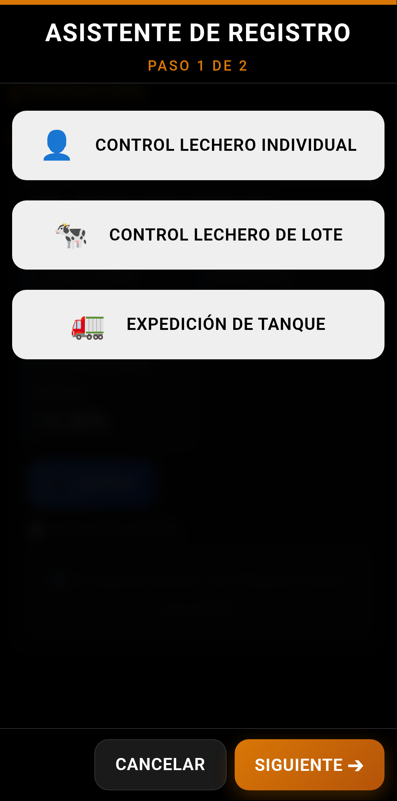
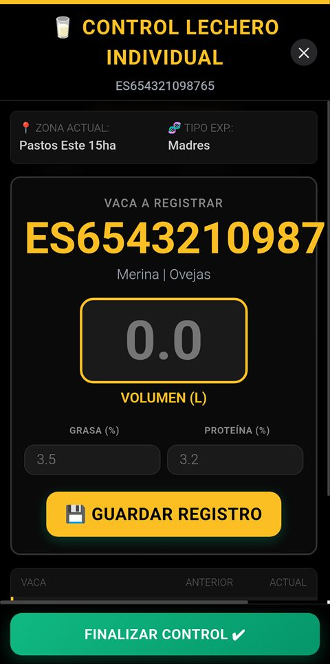
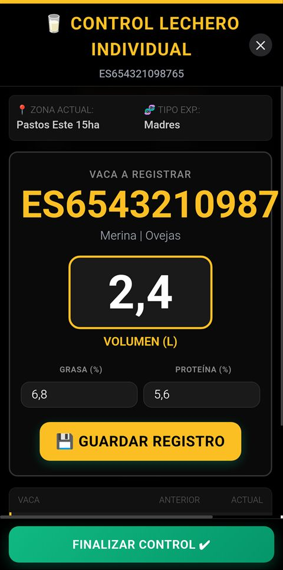
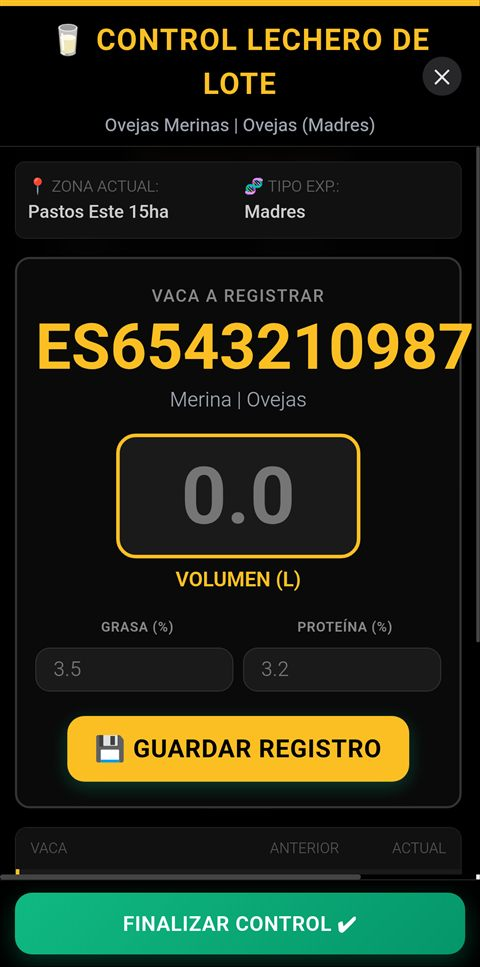
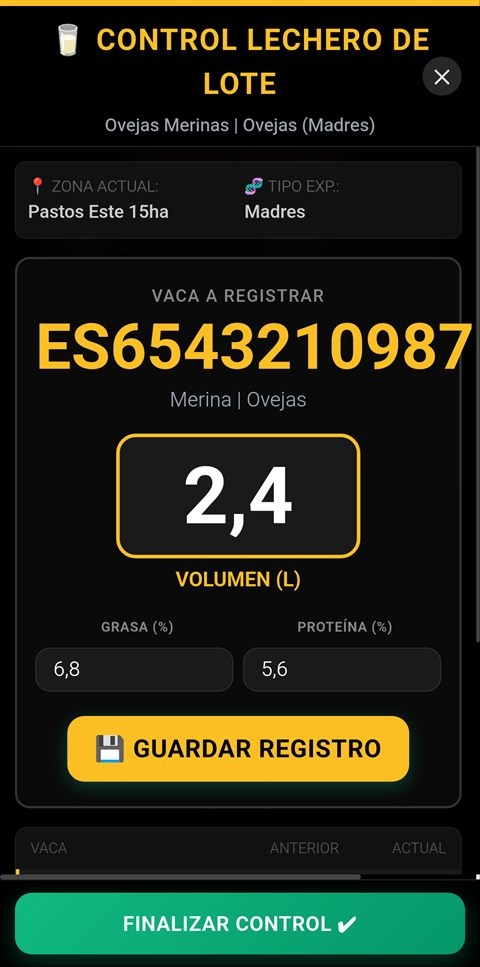

Control Individual, Control por Lote y Expedición de Tanque — Guía completa paso a paso
MANUAL PRÁCTICO · Todos los flujos de producción láctea
📖 Sobre este manual
Este manual documenta los tres flujos de control lechero disponibles en Livestock Manager:
el control lechero individual por animal, el control lechero de lote
para rebaños, y la expedición de tanque completa con los 6 pasos del wizard
de albarán de leche.
El acceso se realiza desde Registros → Producción (pestaña 🥛 Láctea)
para los controles individual y de lote, y desde Registros → Comercialización (pestaña Leche)
para la expedición de tanque.
Desde el menú inferior, pulsa Registros → Producción y luego selecciona
la pestaña 🥛 Láctea para acceder a los controles lecheros.
Vista de la sección de Producción con la pestaña Láctea activa, mostrando indicadores y registros.
En esta pantalla puedes ver:
Indicadores clave: Nº de animales en ordeño, producción media (L/animal/día), producción total del período
Últimos registros: Lista de los últimos controles lecheros registrados
Botón de acción:+ NUEVO CONTROL que abre el Asistente de Producción en modo leche
🥛 Producción láctea: Livestock Manager permite registrar tanto la producción
individual de cada animal como la producción agregada del rebaño, incluyendo parámetros de calidad
(grasa, proteína) para cada control.
Selección
2. Selección de modalidad de control

Asistente de producción en modo leche: selección de modalidad (Individual, Lote o Tanque).
Al abrir el asistente con el preset "leche", se muestran las modalidades disponibles:
Modalidad
Descripción
🥛 Control Lechero Individual
Registra la producción de un solo animal (litros, grasa, proteína)
🐑 Control Lechero de Lote
Registra la producción de todo un rebaño lechero
🫗 Expedición de Tanque
Genera un albarán de expedición de leche con todos los parámetros (6 pasos)
Selecciona la modalidad deseada y pulsa SIGUIENTE.
Individual
3. Control Lechero Individual
Registra la producción de leche de un animal concreto, incluyendo litros producidos
y parámetros de calidad (grasa, proteína). Es el método oficial para el control lechero oficial (CLO).
1. Modalidad2. Buscar animal3. Control
Paso 1 de 2
4. Búsqueda del animal

Pantalla de búsqueda: selecciona el animal para registrar su control lechero individual.
En esta pantalla puedes:
Buscar por DIB o crotal del animal
Buscar por nombre del animal
Filtrar por estado (solo animales en ordeño se muestran por defecto)
Ver detalles: raza, fecha de parto, días en lactación, última producción registrada
Seleccionar el animal pulsando sobre su ficha
Tip: La app filtra automáticamente para mostrar solo las hembras en lactación activa.
Si un animal no aparece, comprueba que está dado de alta como hembra y tiene un parto registrado.
Paso 2 de 2
5. Registro del control individual

Formulario de control lechero individual con campos de producción, grasa y proteína.
En la pantalla de control individual se registran los siguientes datos:
Campo
Descripción
Animal
Nombre/DIB del animal seleccionado (solo lectura)
Fecha del control
Fecha del muestreo (por defecto hoy)
Producción (L)
Litros de leche producidos en el ordeño/día de control
Grasa (%)
Porcentaje de grasa en la leche (parámetro de calidad)
Proteína (%)
Porcentaje de proteína en la leche (parámetro de calidad)
Tipo de control
Ordeño mañana/tarde o control completo de 24h
Observaciones
Notas adicionales (opcional)
📐 Ejemplo de control individual
Animal
Raza
Días lact.
Producción
Grasa
Proteína
Manchega 152
Manchega
87
2,4 L
6,5%
5,8%
📊 Parámetros de calidad: En ovino lechero, los valores típicos son:
grasa 6,0–8,0% y proteína 5,0–6,5%. Estos valores se usan para el cálculo del precio
de la leche en función de su composición.
Lote
6. Control Lechero de Lote
Permite registrar la producción de todos los animales del rebaño lechero en una sola
operación. Ideal para el control diario o semanal de la producción del rebaño.
1. Modalidad2. Buscar rebaño3. Control
Paso 1 de 2
7. Búsqueda del rebaño lechero

Pantalla de búsqueda de rebaño para control lechero de lote.
Busca el rebaño por nombre o ubicación
Revisa los detalles: número de animales en ordeño, producción media del rebaño
Selecciona el rebaño pulsando sobre su tarjeta
Nota: El rebaño debe tener animales en lactación activa. Si no aparecen,
registra los partos correspondientes en Registros → Reproducción.
Paso 2 de 2
8. Registro del control por lote

Pantalla de control por lote con tabla de producción para todos los animales del rebaño.
Se muestra una tabla con todos los animales del rebaño en ordeño. Para cada uno puedes registrar:
Columna
Descripción
DIB / Nombre
Identificador del animal (solo lectura)
Días en lactación
Días desde el último parto (solo lectura)
Producción (L)
Litros producidos en este control
Grasa (%)
Porcentaje de grasa (opcional por animal)
Proteína (%)
Porcentaje de proteína (opcional por animal)
Tip: Si todos los animales comparten la misma calidad de leche
(misma alimentación y manejo), puedes establecer un valor de grasa y proteína común
para todo el lote usando el botón "Aplicar a todos".
📋 Resumen de control por lote
Rebaño
Animales
Total L
Media L/animal
Grasa media
Proteína media
Manchegas Ordeño
18
38,6 L
2,14 L
6,8%
5,9%
Wizard 6 pasos
9. Expedición de Tanque (Albarán de Leche)
La expedición de tanque registra la salida de leche del tanque de almacenamiento
hacia la industria. Este proceso genera el albarán de leche oficial con todos los
parámetros exigidos por la normativa: datos de recogida, cadena de frío, analíticas de laboratorio,
precio y liquidación, y la declaración MOFA.
Se accede desde la pestaña 🥛 Leche de Comercialización pulsando "Albarán de Leche" o desde el asistente de producción seleccionando Expedición de Tanque.
1. Datos Grales2. Recogida3. Frío4. Laboratorio5. Precio6. MOFA
Paso 1 de 6
10. Paso 1: Datos Generales, CCAA, Contrato Lácteo y ADSG
Paso 1: Datos administrativos de la expedición — CCAA, contrato lácteo y ADSG.
Campo
Descripción
Fecha de recogida
Fecha de la expedición
CCAA de recogida
Comunidad Autónoma donde se realiza la recogida
Contrato lácteo
Número de contrato con la industria
ADSG
Agrupación de Defensa Sanitaria Ganadera
REGA
Código de la explotación (automático desde la ficha de finca)
📌 Contrato lácteo: Obligatorio según RD 752/2011. Debe estar registrado en la app
antes de crear el albarán. Incluye el volumen comprometido, precio base y condiciones.
Paso 2 de 6
11. Paso 2: Cisterna, Letra Q e INFOLAC
Paso 2: Datos de la cisterna, clasificación Letra Q e información INFOLAC.
Campo
Descripción
Transportista / empresa
Empresa de recogida
Matrícula cisterna
Matrícula del vehículo cisterna
Nº de precinto
Número de precinto del tanque
Letra Q
Q (calidad) o No Q según cumpla parámetros
INFOLAC
Nº de registro INFOLAC (sistema de información láctea)
Volumen recogido (L)
Litros totales de la expedición
Test antibióticos
¿Se ha realizado test de inhibidores?
Nota: La Letra Q es la clasificación de calidad de la leche cruda según
el Reglamento (UE) 1308/2013. Para obtener la calificación Q, la leche debe cumplir los requisitos
de contenido en grasa, proteína, bacterias y células somáticas.
Paso 3 de 6
12. Paso 3: Cadena de Frío y Temperatura
Paso 3: Registro de temperaturas de la cadena de frío y resultado del test de inhibidores.
Parámetro
Rango recomendado
Temperatura en tanque (°C)
2–6 °C
Temperatura a la llegada (°C)
< 8 °C
Horas desde último ordeño
< 24 horas
Test inhibidores
Negativo (obligatorio)
⚠️ Importante: Si la temperatura supera los 8 °C o el test de inhibidores es positivo,
la leche no cumple los requisitos para consumo humano. La app bloqueará la finalización del albarán
y te sugerirá las acciones a seguir (incidencia, retirada, etc.).
Paso 4 de 6
13. Paso 4: Laboratorio y Analíticas
Paso 4: Parámetros analíticos de calidad de la leche registrados en laboratorio.
Registro de los resultados del análisis de laboratorio:
Parámetro
Unidad
Límite calidad
Grasa
%
≥ 3,5%
Proteína
%
≥ 3,0%
Extracto seco
%
≥ 12,0%
Recuento bacterias
UFC/ml
< 100.000
Células somáticas
Cél./ml
< 400.000
Punto crioscópico
°C
≥ -0,520 °C
Urea
mg/L
150–300
Acidez
°D
6,0–7,5
🧪 Parámetros: Los valores corresponden a la normativa europea (Reglamento 853/2004)
y al Real Decreto 640/2006 para leche cruda de ovino y caprino. La app marca automáticamente
los valores fuera de rango para alertar al ganadero.
Paso 5 de 6
14. Paso 5: Precio y Liquidación
Paso 5: Cálculo detallado del precio de la leche y liquidación de la expedición.
Desglose del precio de la leche según los parámetros de calidad registrados:
Concepto
Detalle
Volumen (L)
Litros totales de la expedición
Precio base (€/L)
Según contrato lácteo
Prima grasa (€/L)
± sobre el estándar de grasa
Prima proteína (€/L)
± sobre el estándar de proteína
Prima extracto seco (€/L)
Por extracto seco superior al mínimo
Bonificaciones calidad
Por bajo recuento bacteriano y somático
Penalizaciones
Por incumplimiento de parámetros
Precio final (€/L)
Precio base + primas − penalizaciones
Importe total (€)
Volumen × Precio final
Tip: La app calcula automáticamente el precio final aplicando las primas y
penalizaciones según los parámetros del paso de laboratorio. Puedes ver el desglose completo
antes de finalizar el albarán.
📐 Ejemplo de liquidación
Concepto
Valor
Importe
Volumen
1.250 L
Precio base
0,85 €/L
1.062,50 €
Prima grasa (6,8% vs base 6,0%)
+0,08 €/L
+100,00 €
Prima proteína (5,9% vs base 5,5%)
+0,04 €/L
+50,00 €
Bonificación baja bacterias
+0,02 €/L
+25,00 €
Total liquidación
0,99 €/L
1.237,50 €
Paso 6 de 6
15. Paso 6: MOFA y Resumen Final
Paso 6: Resumen MOFA (Mensual de Operadores y Facturación Anual) y confirmación final.
Último paso del wizard, con el resumen completo para la MOFA:
📊 Resumen MOFA
Total expediciones del mes: Número de albaranes creados en el mes actual
Volumen mensual: Suma de litros de todas las expediciones del mes
Volumen esta expedición: Litros del albarán actual
Acumulado mensual: Volumen total del mes incluyendo esta expedición
Importe total mensual: Suma de importes de todas las expediciones del mes
✅ Resumen del albarán
Antes de finalizar se muestra un resumen completo con todos los datos introducidos:
Datos de la explotación: REGA, titular, CCAA
Datos de recogida: Fecha, transportista, cisterna, volumen
Parámetros de calidad: Grasa, proteína, bacterias, somáticas
Cadena de frío: Temperaturas y test de inhibidores
Liquidación: Precio base, primas, bonificaciones e importe total
Revisa todos los datos y pulsa FINALIZAR para:
Guardar el albarán en el histórico de expediciones
Actualizar el registro MOFA del mes
Generar el PDF del albarán con todos los detalles
Actualizar los indicadores de producción láctea
Documentos generados: El sistema genera automáticamente:
Albarán de leche PDF — con todos los datos de la expedición
Registro MOFA — actualizado con el volumen e importe
Etiqueta de tanque — con trazabilidad del lote (opcional)
Tip: Puedes consultar, reimprimir o editar cualquier albarán desde la pestaña
Leche de Comercialización. Los datos MOFA se acumulan automáticamente
para facilitar la declaración mensual.
Livestock Manager v6.4 · Manual de Control Lechero · Individual, Lote y Expedición de Tanque